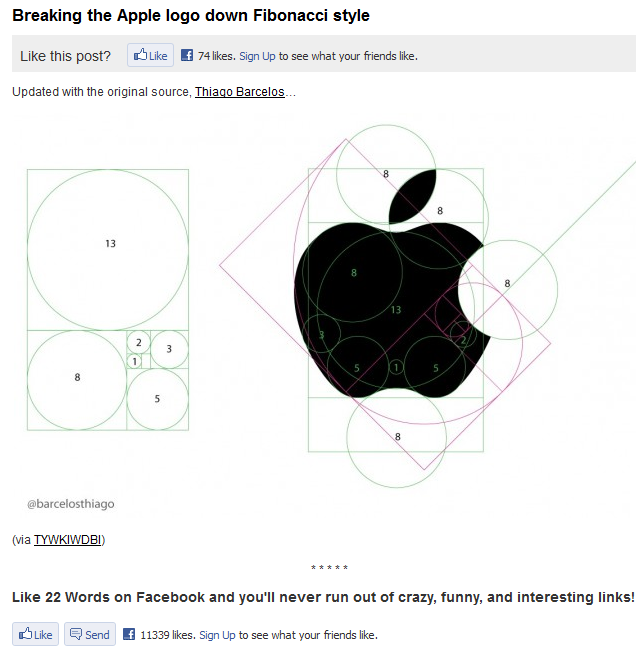
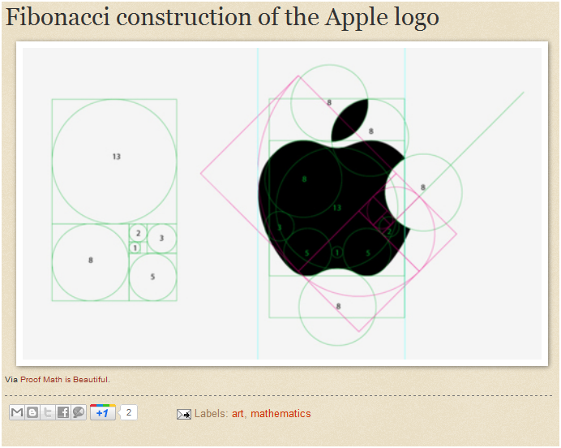
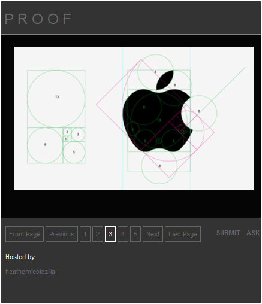
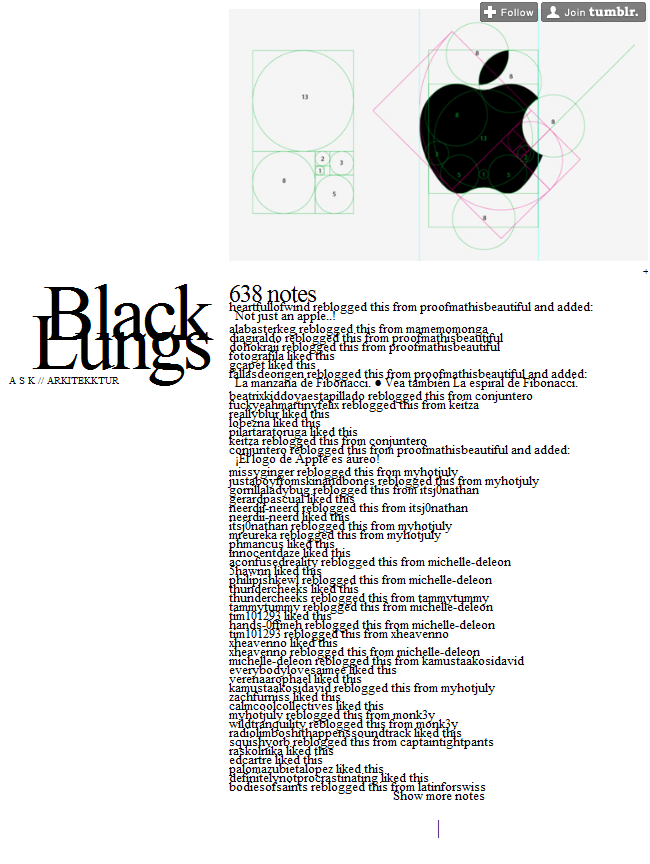
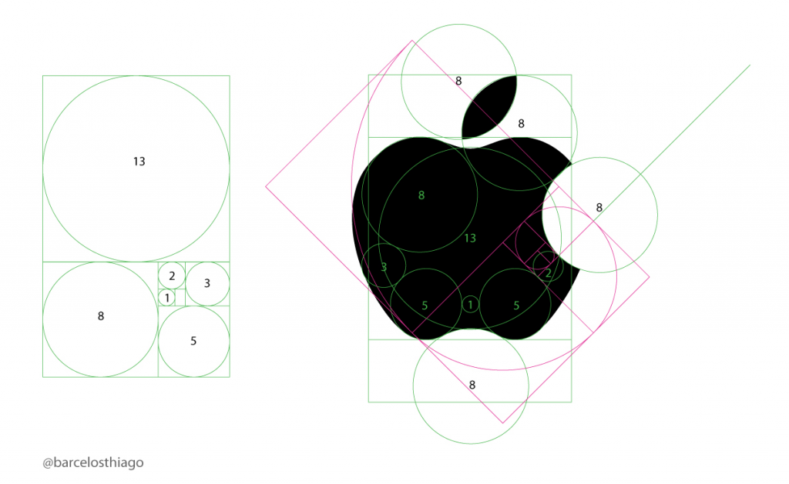

I saw this beautiful examination of the Apple logo via The Endeavor:

And noticed the remark, “Updated with the original source, Thiago Barcelos…” Originally, I thought this was an admission by the original poster that they purposefully hadn’t the cited the original source in their posting, but then I noticed that they had pointed out clearly their image comes from a small Blog on blogspot named Things You Wouldn’t Know If We Didn’t Blog Intermittently, where the image has so far had 3 comments.

Which itself pointed to the unnumbered mass that is tumblr, first in this form from proofmathisbeautiful:

And then, finally, because tumblr enforces a simple citation system, I easily followed that to the schwarze Lunge tumblr account:

Where it received 638 comments, most of which were notifications that other tumblr users had shared the image through the much more popular proofmathisbeautiful account. Which leads me back to the Thiago Barcelos comment, which is not explained in the above chain of ownership. It seems that one of the comments on the initial posting was from the putative creator of the work, who points to a different tumblr account than the one dug up through arduous clicking of varicolored text hyperlinks. There, you can find another edition of this image, except one festooned with a Twitter username:

Based on all the golden ratios that particular tumblr account shows, I can only assume it’s the real source. However, given the simplicity and voracity with which we share images, text and other free data through Twitter, tumblr, Google Plus and the various blogs and blog-like pages that are used in fundamentally the same way, this is a situation that is only going to grow more unmanageable.
This is just one image made of easily recognizable concepts and elements, that has not been re-purposed or integrated into other images, and this search does not include any of the other branches to be considered as metadata or as unique instantiations. I’ve naively implied that it’s the same image, despite its being renamed and resized and resampled automatically by various image upload libraries. If it takes that much effort to understand the origin and metadata of something as singular as this, then how can we plan research agendas around collections that include hundreds of these, or hundreds of millions? Whether it’s openly admitted or not, we are at the point when we are overwhelmed with free data (and here I do not mean free as in speech or free as in beer but rather free as in raw and uncategorical) and especially in aggregate, as big data, it means we’re not being honest when we treat the situation as if it’s a difference in scale and not in kind.